资源
正文
我们这个模型使用单个神经网络直接预测 完整图像中的任意方向和四边形的单词或文本行，消除了不必要的中间步骤（如候选聚合和单词划分）。我们的模型在 ICDAR 2015、COCO Text 和 MSRA-TD500 中都非常好使！
文本检测作为后续过程的先决 条件，核心是设计特征来区分文本和背景。
提出了一个快速准确的场景文本检测流水线，使用一个**完全卷积神经网络（FCN）模型，产生单词或文本行级别的预测，排除了冗余和缓慢的中间步骤。生成的文本预测可以是旋转的矩形或四边形，将被发送到 非最大抑制（Non-Maximum Suppression，NMS）**以产生最终结果。
EAST , since it is an E fficient and A ccuracy S cene T ext detection pipeline.
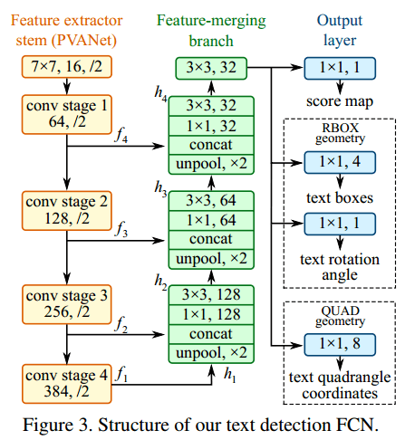
Feature extractor
stem，特征提取炳（PVANet）
主干可以是在 ImageNet 数据集上预先训练的卷积网络，具有交错的卷积和池化层。从干提取四个级别的特征图，表示为 f i f_i f i 1 3 2 , 1 1 6 , 1 8 \frac{1}{32},\frac{1}{16},\frac{1}{8} 3 2 1 , 1 6 1 , 8 1 1 4 \frac{1}{4} 4 1
Feature-merging
branch，特征合并分支
逐渐将它们合并（concat）：
g i = { u n p o o l ( h i ) i f i ≤ 3 c o n v 3 × 3 ( h i ) i f i = 4 g_i=\left\{\begin{matrix}\mathrm{unpool}(h_i) & \mathrm{if} & i\le3 \\ \mathrm{conv}_{3\times3}(h_i) & \mathrm{if} & i=4\end{matrix}\right. g i = { u n p o o l ( h i ) c o n v 3 × 3 ( h i ) i f i f i ≤ 3 i = 4
h i = { f i i f i = 1 c o n v 3 × 3 ( c o n v 1 × 1 ( [ g i − 1 ; f i ] ) ) o t h e r w i s e h_i=\left\{\begin{matrix}f_i & \mathrm{if}\ i=1\\\mathrm{conv}_{3\times3}(\mathrm{conv_{1\times1}}([g_{i-1};f_i])) & \mathrm{otherwise}\end{matrix}\right. h i = { f i c o n v 3 × 3 ( c o n v 1 × 1 ( [ g i − 1 ; f i ] ) ) i f i = 1 o t h e r w i s e
g i g_i g i
h i h_i h i
运算符 [·;·] 表示沿通道轴的串联
在每个合并阶段，来自最后一个阶段的特征图首先被馈送到 unpool 层以使其大小加倍，然后与当前特征图连接。
\mathrm{conv}_{1×1} 减少了通道数量并减少了计算
c o n v 3 × 3 \mathrm{conv}_{3\times3} c o n v 3 × 3
在最后一个合并阶段之后，c o n v 3 × 3 \mathrm{conv}_{3\times3} c o n v 3 × 3
Output layer，输出层
对文本区域的两种几何形状进行实验：
旋转框（RBOX）
4 个轴对齐边界框（AABB）R \mathbf R R
1 个通道旋转角度 θ \theta θ
四边形（QUAD）
使用 8 个数字来表示从四边形的四个角顶点 { p i ∣ i ∈ { 1 , 2 , 3 , 4 } } \{p_i|i\in\{1,2,3,4\}\} { p i ∣ i ∈ { 1 , 2 , 3 , 4 } } ( Δ x i , Δ y i ) (\Delta x_i,\Delta y_i) ( Δ x i , Δ y i )
为每种几何形状设计了不同的损失函数:
包含几个 \mathrm{conv}_{1×1} 操作，将 32 个通道的特征图投影到 1 个通道的分数图 F s F_s F s F g F_g F g
将阈值应用于每个预测区域，其中得分超过预定义阈值的几何体被认为是有效的，并保存以供以后进行非最大值抑制。NMS 之后的结果被认为是管道的最终输出。ADAM 优化器，batch=24。
NMS：在假设附近像素的几何图形往往高度相关的情况下，我们建议逐行合并几何图形，在合并同一行中的几何图形时，我们将迭代合并当前遇到的几何图形和最后合并的几何图形。这种改进的技术在最佳场景中在 O ( n ) O(n) O ( n )
未来研究的可能方向包括：
调整几何公式，以允许直接检测弯曲文本；
将所述检测器与文本识别器集成；
将该思想扩展到通用对象检测。
代码
Pytorch
Windows
从 SakuraRiven/EAST: PyTorch Re-Implementation of EAST: An Efficient and Accurate Scene Text Detector (github.com) 加载仓库：
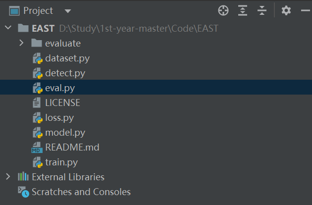
加载工程文件
conda 中新建一个 EAST 环境（conda create -n east python=3.7）并安装好：
pytorch
shapely
opencv-python 4.0.0.21
lanms，巨难装，用 pip install lanms-neo==1.0.2 -i https://pypi.tuna.tsinghua.edu.cn/simple
如果是 wsl2 的 ubuntu， pip install lanms-proper
设置好解释器
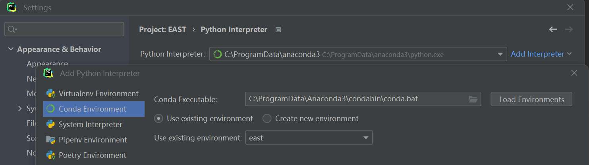
设置解释器
下载模型：VGG16 和 EAST ，将它们放在 pths/ 文件夹中
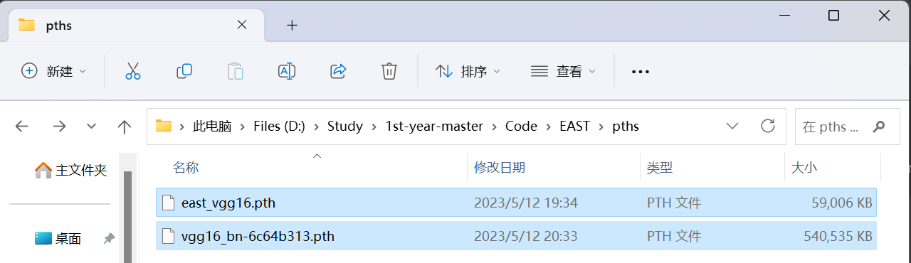
下载并放置预训练好的模型
从 Downloads - Incidental Scene Text - Robust Reading Competition (uab.es) 下载好 ICDAR 2015 Challenge 4 数据集，解压并按规则放在对应的文件夹中（原项目想放到工程外面，我改到了工程里面）
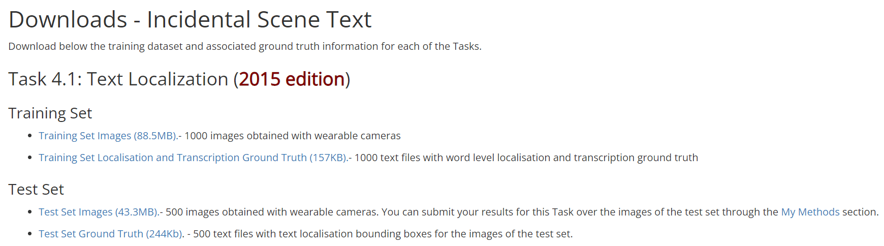
数据集官网
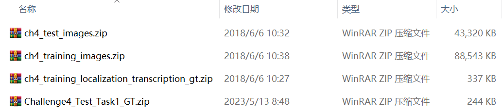
下载出这么四个压缩包
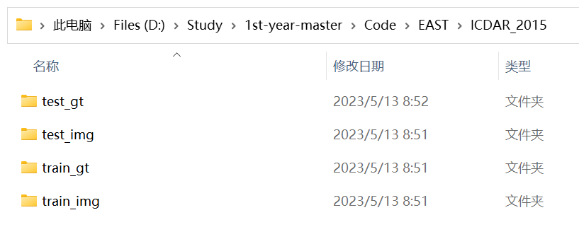
设置数据集地址
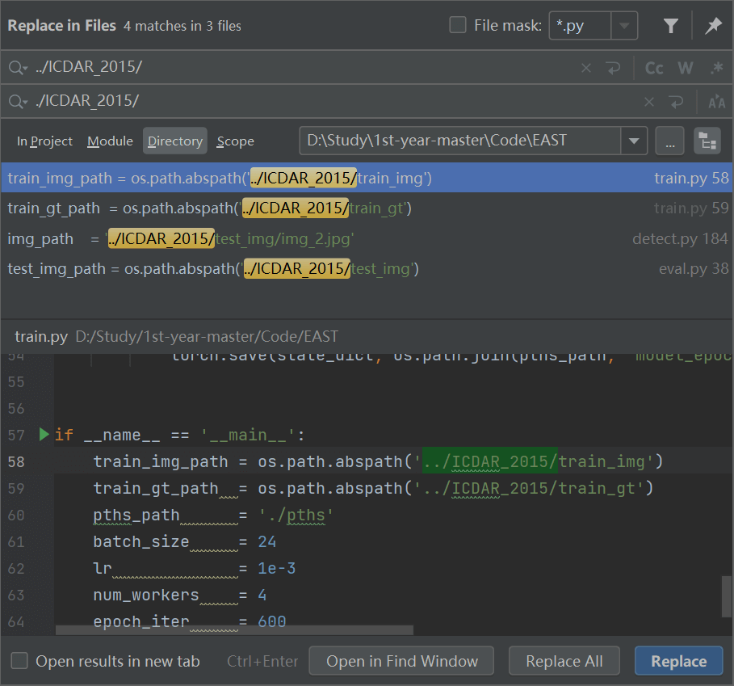
修改路径
开跑 detect.py！
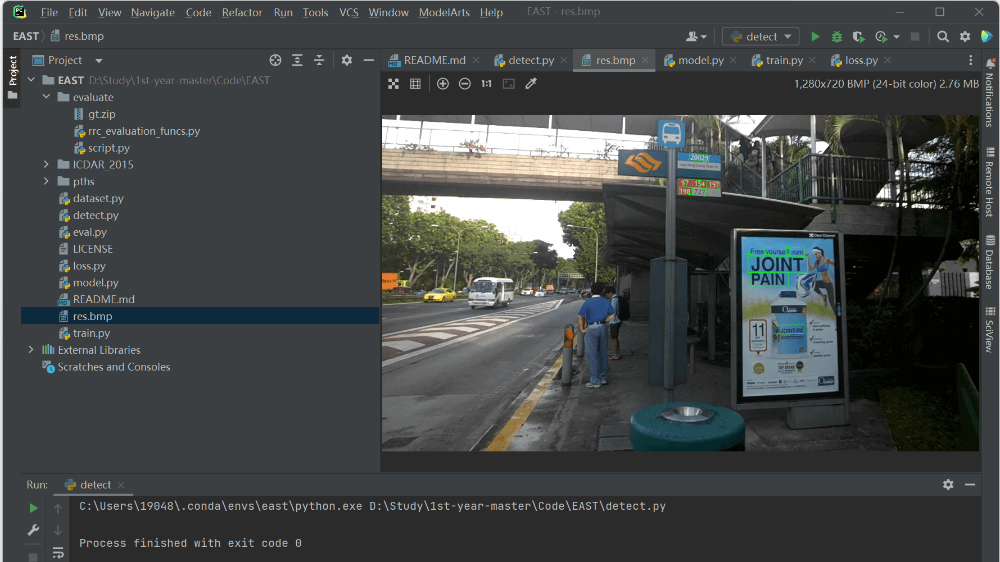
预测结果
开跑 train.py！喜提错误：UnicodeDecodeError: ‘gbk’ codec can’t decode byte 0xbf in position 2: illegal multibyte sequence ！在 dataset.py 中的第 382 行 with open(self.gt_files[index], 'r') as f: 改成 with open(self.gt_files[index], 'r', encoding='utf-8') as f: 填之。
开跑 train.py！喜提错误：torch.cuda.OutOfMemoryError: CUDA out of memory. Tried to allocate 1.50 GiB (GPU 0; 8.00 GiB total capacity; 3.14 GiB already allocated; 2.79 GiB free; 3.15 GiB reserved in total by PyTorch) If reserved memory is >> allocated memory try setting max_split_size_mb to avoid fragmentation. See documentation for Memory Management and PYTORCH_CUDA_ALLOC_CONF ！在train.py 里把 batch_size = 24 改成 batch_size = 4 填之。
开跑 train.py！能跑了！
WSL2
装好环境
1 2 3 4 5 conda create -n EAST python=3.7
开跑！
喜提错误：
1 2 3 File "/home/gz/anaconda3/envs/EAST/lib/python3.7/site-packages/cv2/__init__.py", line 3, in <module>
填：
1 2 sudo apt updatesudo apt install libsm6
喜提错误：
1 2 Could not load library libcudnn_cnn_infer.so.8. Error: libcuda.so: cannot open shared object file: No such file or directory
安装 CUDNN：
1 sudo apt install nvidia-cuda-toolkit
开跑！
1 2 3 4 5 6 7 8 9 10 11 12 13 14 15 16 17 18 19 20 21 22 23 24 /home/gz/anaconda3/envs/EAST/lib/python3.7/site-packages/torch/optim/lr_scheduler.py:143: UserWarning: Detected call of `lr_scheduler.step()` before `optimizer.step()`. In PyTorch 1.1.0 and later, you should call them in the opposite order: `optimizer.step()` before `lr_scheduler.step()`. Failure to do this will result in PyTorch skipping the first value of the learning rate schedule. See more details at https://pytorch.org/docs/stable/optim.html#how-to-adjust-learning-rate
MindSpore
读代码
好像跟其他的train.py差不多，设置完各种参数然后加载模型和优化器，开跑！
各种细节都在src/里。
1 2 3 4 5 6 from src.util import AverageMeter, get_param_groupsfrom src.east import EAST, EastWithLossCellfrom src.logger import get_loggerfrom src.initializer import default_recurisive_initfrom src.dataset import create_east_datasetfrom src.lr_scheduler import get_lr
这段代码主要是对所需的模块进行引用，包括平均数计算、网络参数获取、EAST 模型、损失函数、日志记录、参数初始化、EAST 数据集和学习率调度器。
首先，从src.util模块中引入AverageMeter()和get_param_groups()方法，分别用于计算平均数和获取网络中需要训练的参数。
接着，从src.east模块中引入EAST类和EastWithLossCell类，分别表示 EAST 模型和组合了损失函数的 EAST 模型。
然后，从src.logger模块中引入get_logger()方法，用于获取日志记录器。
接下来，从src.initializer模块中引入default_recursive_init()方法，用于对 EAST 模型进行默认的递归初始化。
再者，从src.dataset模块中引入create_east_dataset()方法，用于创建 EAST 数据集。
最后，从src.lr_scheduler模块中引入get_lr()方法，用于获取当前 epoch 的学习率。
设置 Parser 变量
设置分布式计算参数
设置 ModelArts 相关参数
设置相关路径（数据集、日志输出地址）
代码加速优化相关
加载模型
设置优化器
开始训练
先使用 Argparse 模块创建一个 ArgumentParser 对象，用于解析命令行参数。
ArgumentParser('mindspore icdar training')：创建一个 ArgumentParser 对象，并把 'mindspore icdar training' 作为参数传入，即设置程序的描述信息为 mindspore icdar training。
Parser 变量
设备 相关：
name
type
default
help
–device_target
str
Ascend
device where the code will be implemented.
–device_id
int
0
device id where the model will be implemented.
数据集 相关：
name
type
default
help
–data_dir
str
‘./data/icdar2015/Training/’
Train dataset directory.
–per_batch_size
int
8
Batch size for Training.
–outputs_dir
str
‘outputs/’
output dir.
神经网络 相关：
name
type
default
help
–pretrained_backbone
str
‘./data/vgg/XXX.ckpt’
The ckpt file of ResNet.
–resume_east
str
The ckpt file of EAST, which used to fine tune. （模型微调）
优化器 和学习率 相关：
name
type
default
help
–lr_scheduler
str
‘my_lr’
Learning rate scheduler（学习率调整策略）, options: exponential （指数衰减）, cosine_annealing （余弦退火）. Default: cosine_annealing
–lr
float
0.001
Learning rate.
–per_step
float
2
Learning rate change times.
–lr_gamma
float
0.1
Decrease lr by a factor of exponential lr_scheduler.（将 lr 减少指数 lr_scheduler系数）
–eta_min
float
0.
Eta_min in cosine_annealing scheduler.
–t_max
int
100
T-max in cosine_annealing scheduler.
–max_epoch
int
600
Max epoch num to train the model.
–warmup_epochs
float(?)
6
Warmup epochs.
–weight_decay
float
0.0005
Weight decay factor.
损失函数 相关：
name
type
default
help
–loss_scale
int
1
Static loss scale.（静态损失标度）
–resume_east
str
7,7
Epoch of changing of lr changing, split with “,”（改变 lr 的 epoch 变化，用 “，” 拆分）
日志 相关：
name
type
default
help
–log_interval
int
10
Logging interval steps.（记录间隔步骤）
–ckpt_path
str
‘outputs/’
Checkpoint save location.
–ckpt_interval
int
1000（太大了吧，牛逼）
Save checkpoint interval.（保存检查点间隔）
–is_save_on_master
int
1
Save ckpt on master or all rank, 1 for master, 0 for all ranks.（这个 master 和 rank 应该跟分布式计算有关）
分布式计算 相关：
name
type
default
help
–is_distributed
int
0
Distribute train or not, 1 for yes, 0 for no.
–rank
int
0
Local rank of distributed.
–group_size
int
1
World size of device.
**profiler（性能分析器）**相关：
name
type
default
help
–need_profiler
int
0
Whether use profiler. 0 for no, 1 for yes.
modelArts 相关：
name
type
default
help
–is_modelArts
int
0
Trainning in modelArts or not, 1 for yes, 0 for no.
分布式计算
这段代码主要是设置 Mindspore 的分布式计算 的参数，我并不想动它。
1 2 3 4 5 6 7 8 9 10 11 args, _ = parser.parse_known_args()int (os.getenv("DEVICE_ID" , "0" ))if args.is_distributed:True ,
ModelArts
ModelArts 相关的参数，但是我把它设为 0 依然能跑？
这段代码主要是用于处理在华为云ModelArts平台上运行时的数据和模型路径。
首先判断args.is_modelArts是否为True，如果是，则意味着程序运行在华为云ModelArts平台上，需要对存储路径进行修改。
接着，导入moxing库，这个库是华为云针对ModelArts平台的Python SDK，提供了丰富的API用于读写数据、上传下载文件等操作。
然后，根据当前进程的编号（即args.rank变量）生成本地数据路径和本地模型路径，并将模型文件从远程路径（即args.pretrained_backbone）重命名为本地模型路径。
接下来，使用mox.file.copy_parallel()方法将数据从远程路径（即args.data_dir）拷贝到本地数据路径。
最后，将输出路径（即args.outputs_dir）设置为/cache目录下的子目录。在ModelArts平台上运行程序时，程序的输出也需要放在/cache目录下，以保证数据的持久化存储。
1 2 3 4 5 6 7 8 9 10 11 12 13 14 if args.is_modelArts:import moxing as mox'/cache/data' , str (args.rank))'/cache/ckpt' , str (args.rank))'backbone.ckpt' )'/cache' , args.outputs_dir)
相关路径
设置相关路径 （数据集、日志）：
1 2 3 4 5 6 7 8 9 10 11 args.data_root = os.path.abspath(os.path.join(args.data_dir, 'image' ))'groundTruth' ))str (args.rank))'%Y-%m-%d_time_%H_%M_%S' ))
if __name__ == "__main__":
优化
进行代码加速优化 ：
1 2 3 4 5 6 7 8 9 10 11 12 13 14 15 16 17 18 19 20 21 22 if args.need_profiler:True ,True )'loss' )1 if args.is_distributed:True ,
加载模型
1 2 3 4 5 6 7 8 9 10 11 12 13 14 15 16 17 18 19 20 21 22 23 24 25 26 27 28 29 30 31 32 network = EAST() if args.pretrained_backbone: 'finish load pretrained_backbone' ) if args.resume_east: 'finish get resume east' )'finish get network' )True )'Finish loading dataset' )int (if not args.ckpt_interval:
设置优化器
1 2 3 4 5 6 7 8 9 10 1.0 , drop_overflow_update=True )
训练
开始训练 ：
1 2 3 4 5 6 7 8 9 10 11 12 13 14 15 16 17 18 19 20 21 22 23 24 25 26 27 28 network.set_train() 100 ,1 )'ckpt_' + str (args.rank) + '/' )"checkpoint_east" ,True )'==========end training===============' )
src/util.py
定义了一些工具人类和函数，看不懂 orz：
class AverageMeter：记录各个指标的训练过程中的平均值和当前值default_wd_filter()：定义了一个默认的权重衰减过滤器函数，过滤掉不需要进行权重衰减的参数，例如偏置项和批归一化层中的偏置项和权重get_param_groups()：接受一个神经网络模型network作为参数，并将其可训练参数分成有权重衰减和无权重衰减两个组，并返回一个包含参数组信息的列表，每个参数组都包含params和weight_decay两个键值对class ShapeRecord：记录图像大小的类
src/east.py
class EAST
定义了一个 EAST 网络的类 EAST：
1 2 3 4 5 6 7 8 9 10 11 12 13 14 15 16 17 18 19 class EAST (nn.Cell):def __init__ (self ):super (EAST, self ).__init__()self .extractor = VGG16FeatureExtraction()self .merge = Merge()self .output = Output()def construct (self, x_1 ):self .extractor(x_1)self .merge(f_0, f_1, f_2, f_3, f_4)self .output(x_1)return score, geo
代码对应的就是论文里的三个部分了：
Feature extractor stem (PVANet) - class VGG16FeatureExtraction
提取图像特征的模块，返回 5 组特征图用于后续处理
Feature-merging branch - class Merge
将特征图组合的模块，将 5 组特征图拼接在一起，形成更为丰富多样的特征信息用于后续处理
Output layer - class Output
输出模块，对拼接后的特征图进行卷积处理来得到文本区域预测分数score和几何信息预测值geo
大致就是定义了一堆卷积核，然后按照论文里的方式一阵卷，返回 5 组特征图，但是特征图的标号好像跟论文里是反着来的。
1 2 3 4 5 6 7 8 9 10 11 12 13 14 15 16 17 18 19 20 21 22 23 24 25 26 27 28 29 30 31 32 33 34 35 36 37 38 39 40 41 42 43 44 45 46 47 48 class VGG16FeatureExtraction (nn.Cell):"""VGG16FeatureExtraction for deeptext""" def __init__ (self ):super (VGG16FeatureExtraction, self ).__init__()self .relu = nn.ReLU()self .max_pool = nn.MaxPool2d(kernel_size=2 , stride=2 )self .avg_pool = nn.AvgPool2d(kernel_size=2 , stride=2 )self .conv1_1 = _conv(3 ,64 ,3 ,1 )self .conv5_3 = _conv(512 ,512 ,3 ,1 )self .cast = P.Cast()def construct (self, out ):""" Construction of VGG """ self .cast(out, mstype.float32)self .conv1_1(out)self .relu(out)self .conv1_2(out)self .relu(out)self .max_pool(out)self .max_pool(out)self .conv5_1(out)self .relu(out)self .conv5_2(out)self .relu(out)self .conv5_3(out)self .relu(out)self .max_pool(out)return f_0, f_2, f_3, f_4, f_5
class Merge
P是 MindSpore 中的一个模块，代表了运算符(operators)。我们可以通过import mindspore.ops as P来引入这个模块，从而使用其中定义的各种运算符函数，例如上述代码中使用的Concat()和ResizeBilinear()函数。
也是定义一堆函数：
ResizeBilinear()：是 MindSpore 中的一个图像处理函数，在图像上进行双线性插值，将输入图像缩放到指定大小。由于该模型中需要特征融合操作，因此使用该函数将不同尺度的特征图调整到相同尺寸，便于进行特征拼接。concat()：特征图拼接nn.BatchNorm2d(128)：是 MindSpore 中的一个二维批归一化函数，用于对网络模型中的卷积层或全连接层的输出进行归一化处理，以便更好地协调不同神经元之间的协同工作。relu()：激活函数
1 2 3 4 5 6 7 8 9 10 11 12 13 14 15 16 17 18 19 20 21 22 23 24 25 26 27 28 29 30 31 32 33 34 35 36 37 38 39 40 class Merge (nn.Cell):def __init__ (self ):super (Merge, self ).__init__()self .conv1 = nn.Conv2d(1024 , 128 , 1 , has_bias=True )self .bn1 = nn.BatchNorm2d(128 )self .relu1 = nn.ReLU()self .conv2 = nn.Conv2d(128 ,128 ,3 ,1 ,'pad' ,True )self .bn2 = nn.BatchNorm2d(128 )self .relu2 = nn.ReLU()def construct (self, x, f1, f2, f3, f4 ):2 ]3 ]16 , img_width / 16 ), True )(f4)self .concat((out, f3))self .relu1(self .bn1(self .conv1(out)))self .relu2(self .bn2(self .conv2(out)))8 , img_width / 8 ), True )(out)self .concat((out, f2))self .relu3(self .bn3(self .conv3(out)))self .relu4(self .bn4(self .conv4(out)))4 , img_width / 4 ), True )(out)self .concat((out, f1))self .relu5(self .bn5(self .conv5(out)))self .relu6(self .bn6(self .conv6(out)))self .relu7(self .bn7(self .conv7(out)))return out
class Output
1 2 3 4 5 6 7 8 9 10 11 12 13 14 15 16 17 18 19 class Output (nn.Cell):def __init__ (self, scope=512 ):super (Output, self ).__init__()self .conv1 = nn.Conv2d(32 , 1 , 1 )self .sigmoid1 = nn.Sigmoid()self .conv2 = nn.Conv2d(32 , 4 , 1 )self .sigmoid2 = nn.Sigmoid()self .conv3 = nn.Conv2d(32 , 1 , 1 )self .sigmoid3 = nn.Sigmoid()self .scope = scopeself .concat = P.Concat(axis=1 )self .PI = 3.1415926535898 def construct (self, x ):self .sigmoid1(self .conv1(x)) self .sigmoid2(self .conv2(x)) * self .scope self .sigmoid3(self .conv3(x)) - 0.5 ) * self .PI self .concat((loc, angle)) return score, geo
class EastLossBlock
在该模块计算损失时，首先计算分类损失，即将预测得到的文本区域得分与真实标注的文本区域得分进行比较，采用 Dice 系数计算分类损失。
接着，将预测得到的位置信息和真实标注的位置信息分别拆分出来，通过计算交并比（IoU）和角度误差得到位置损失，最终通过加权平均作为总体的位置损失。其中，角度误差使用余弦相似度计算。
在计算位置损失时，还需考虑训练集中的样本是否为真实文本区域，需将训练集中非文本区域处的位置信息、分类标注和对应的模型预测结果剔除掉，以避免这些数据对损失计算的干扰。
最后将分类损失和位置损失加权求和，作为总体损失并返回。
1 2 3 4 5 6 7 8 9 10 11 12 13 14 15 16 17 18 19 20 21 22 23 24 25 26 27 28 29 30 31 32 33 34 35 36 37 38 39 40 41 42 43 44 45 46 class EastLossBlock (nn.Cell):def __init__ (self ):super (EastLossBlock, self ).__init__()self .split = P.Split(1 , 5 )self .min = MyMin()self .log = P.Log()self .cos = P.Cos()self .mean = P.ReduceMean(keep_dims=False )self .sum = P.ReduceSum()self .eps = 1e-5 self .dice = DiceCoefficient()def construct ( self, y_true_cls, y_pred_cls, y_true_geo, y_pred_geo, training_mask ):self .sum (y_true_cls)self .dice(1 - training_mask))self .split(y_true_geo)self .split(y_pred_geo)self .min (d2_gt, d2_pred) + self .min (d4_gt, d4_pred)self .min (d1_gt, d1_pred) + self .min (d3_gt, d3_pred)self .log((area_intersect + 1.0 ) /1.0 )) 1 - self .cos(theta_pred - theta_gt) self .sum (angle_loss_map * y_true_cls) / ansself .sum (iou_loss_map * y_true_cls) / ans10 * angle_loss + iou_lossreturn geo_loss + classification_loss
class EastWithLossCell
1 2 3 4 5 6 7 8 9 10 11 12 13 14 15 16 17 18 19 20 21 22 23 24 25 class EastWithLossCell (nn.Cell):def __init__ (self, network ):super (EastWithLossCell, self ).__init__()self .east_network = networkself .loss = EastLossBlock()def construct (self, img, true_cls, true_geo, training_mask ):''' img: 输入图片 true_cls: 分类标注 true_geo: 位置标注 training_mask: 训练集中的掩码（用于过滤掉非真实文本区域的数据） ''' self .east_network(img)self .loss(return loss
src/dataset.py
create_east_dataset()
1 2 3 4 5 6 7 8 9 10 11 12 13 14 15 16 17 18 19 20 21 22 23 24 25 26 27 28 29 30 31 32 33 34 35 36 37 38 39 40 41 def create_east_dataset ( img_root, txt_root, batch_size, device_num, rank, is_training=True ):len (east_data), device_num, 0 if device_num == 1 else rank, shuffle=True )0.5 , 0.5 , 0.5 , 0.25 ), 1 / 255.0 , 0 ), 0.5 , 0.5 , 0.5 ), (0.5 , 0.5 , 0.5 )), if is_training: "image" , "score_map" , "geo_map" , "training_mask" ] 32 , map ("image" ],8 ,True )8 , drop_remainder=True )return ds, len (east_data)
class ICDAREASTDataset
1 2 3 4 5 6 7 8 9 10 11 12 13 14 15 16 17 18 19 20 21 22 23 24 25 26 27 28 29 30 31 32 33 34 class ICDAREASTDataset :def __init__ (self, img_path, gt_path, scale=0.25 , length=512 ):super (ICDAREASTDataset, self ).__init__()self .img_files = [os.path.join(for img_file in sorted (os.listdir(img_path))]self .gt_files = [for gt_file in sorted (self .scale = scale self .length = length def __getitem__ (self, index ):with open (self .gt_files[index], 'r' ) as f:open (self .img_files[index]) self .length) self .scale, self .length) 2 , 0 , 1 )2 , 0 , 1 )2 , 0 , 1 )if np.sum (score_map) < 1 :0 , 0 , 0 ] = 1 return img, score_map, geo_map, ignored_mapdef __len__ (self ):return len (self .img_files)
1 2 3 4 5 6 7 8 9 10 11 12 13 14 15 16 17 def extract_vertices (lines ):'''extract vertices info from txt lines Input: lines : list of string info 输入是一个字符串列表 lines，其中每个字符串包含了一个文本区域的信息，包括顶点坐标和标签等 Output: vertices: vertices of text regions <numpy.ndarray, (n,8)> 所有文本区域的顶点坐标 labels : 1->valid, 0->ignore, <numpy.ndarray, (n,)> 标签 ''' for line in lines:list (map (int , line.rstrip('\n' ).lstrip('\ufeff' ).split(',' )[:8 ])))0 if '###' in line else 1 return np.array(vertices), np.array(labels)
adjust_height()
1 2 3 4 5 6 7 8 9 10 11 12 13 14 15 16 17 18 19 20 21 22 23 def adjust_height (img, vertices, ratio=0.2 ):'''adjust height of image to aug data Input: img : PIL Image vertices : vertices of text regions <numpy.ndarray, (n,8)> ratio : height changes in [0.8, 1.2] Output: img : adjusted PIL Image new_vertices: adjusted vertices ''' 1 + ratio * (np.random.rand() * 2 - 1 ) int (np.around(old_h * ratio_h))if vertices.size > 0 :1 , 3 , 5 , 7 ]] = vertices[:, [1 , 3 , 5 , 7 ]] * (new_h / old_h)return img, new_vertices
rotate_img()
1 2 3 4 5 6 7 8 9 10 11 12 13 14 15 16 17 18 19 20 21 22 23 def rotate_img (img, vertices, angle_range=10 ):'''rotate image [-10, 10] degree to aug data Input: img : PIL Image vertices : vertices of text regions <numpy.ndarray, (n,8)> angle_range : rotate range Output: img : rotated PIL Image new_vertices: rotated vertices ''' 1 ) / 2 1 ) / 2 2 - 1 )for i, vertice in enumerate (vertices):180 * math.pi, np.array([[center_x], [center_y]]))return img, new_vertices
crop_img()
1 2 3 4 5 6 7 8 9 10 11 12 13 14 15 16 17 18 19 20 21 22 23 24 25 26 27 28 29 30 31 32 33 34 35 36 37 38 39 40 41 42 43 44 45 46 47 48 49 50 51 52 53 def crop_img (img, vertices, labels, length ):'''crop img patches to obtain batch and augment Input: img : PIL Image vertices : vertices of text regions <numpy.ndarray, (n,8)> labels : 1->valid, 0->ignore, <numpy.ndarray, (n,)> length : length of cropped image region Output: region : cropped image region new_vertices: new vertices in cropped region ''' if h >= w and w < length:int (h * length / w)), Image.BILINEAR)elif h < w and h < length:int (w * length / h), length), Image.BILINEAR)assert (ratio_w >= 1 and ratio_h >= 1 )if vertices.size > 0 :0 , 2 , 4 , 6 ]] = vertices[:, [0 , 2 , 4 , 6 ]] * ratio_w1 , 3 , 5 , 7 ]] = vertices[:, [1 , 3 , 5 , 7 ]] * ratio_hTrue 0 while flag and cnt < 1000 :1 int (np.random.rand() * remain_w)int (np.random.rand() * remain_h)1 , :])if new_vertices.size == 0 :return region, new_vertices0 , 2 , 4 , 6 ]] -= start_w1 , 3 , 5 , 7 ]] -= start_hreturn region, new_vertices
先使用 argparse 设置一堆参数：
name
type
default
help
–device_target
str
‘Ascend’
evice where the code will be implemented. (Default: Ascend)
–device_num
int
5
设备数，如果只有 1 个设备的话，设成 5 不能跑，设成 0 能跑
–test_img_path
str
‘./data/icdar2015/Test/images/’
测试集地址
–checkpoint_path
str
模型地址
1 2 3 4 5 context.set_context(False ,
main
设置一下模型、数据集、保存路径、开跑！
1 2 3 4 5 if __name__ == '__main__' :'./submit'
eval_model()
1 2 3 4 5 6 7 8 9 10 11 12 13 14 15 16 17 18 19 20 21 22 23 24 25 26 27 28 29 30 31 32 33 34 35 36 def eval_model (name, img_path, submit, save_flag=True ):''' name: 模型的 checkpoint 文件路径 img_path: 测试集图片所在的文件夹路径 submit: 输出结果保存的文件夹路径 save_flag: 是否保存中间结果 ''' if os.path.exists(submit):True )'zip -q submit.zip *.txt' )'mv submit.zip ../' )'../' )'python ./evaluate/script.py -g=./evaluate/gt.zip -s=./submit.zip' )print (res)'./submit.zip' )print ('eval time is {}' .format (time.time() - start_time))if not save_flag:
detect_dataset()
1 2 3 4 5 6 7 8 9 10 11 12 13 14 15 16 17 18 19 20 21 22 23 24 25 26 27 def detect_dataset (model, test_img_path, submit_path ):""" detection on whole dataset, save .txt results in submit_path Input: model : detection model 模型实例 device : gpu if gpu is available test_img_path: dataset path 测试图片所在文件夹的路径 submit_path : submit result for evaluation 提交结果保存路径 """ sorted ([os.path.join(test_img_path, img_file)for img_file in img_files])for i, img_file in enumerate (img_files):print ('evaluating {} image' .format (i), end='\r' )open (img_file), model)if boxes is not None :',' .join([str (int (b))for b in box[:-1 ]]) + '\n' for box in boxes])with open (os.path.join(submit_path, 'res_' +'.jpg' , '.txt' )), 'w' ) as f:
detect()
1 2 3 4 5 6 7 8 9 10 11 12 13 14 15 16 17 18 19 20 def detect (img, model ):"""detect text regions of img using model Input: img : PIL Image model : detection model device: gpu if gpu is available Output: detected polys """ 0 )(score)0 )(geo)return adjust_ratio(boxes, ratio_w, ratio_h)
get_boxes()
1 2 3 4 5 6 7 8 9 10 11 12 13 14 15 16 17 18 19 20 21 22 23 24 25 26 27 28 29 30 31 32 33 34 35 def get_boxes (score, geo, score_thresh=0.9 , nms_thresh=0.2 ):"""get boxes from feature map Input: score : score map from model <numpy.ndarray, (1,row,col)> 概率图 geo : geo map from model <numpy.ndarray, (5,row,col)> 文本框参数 score_thresh: threshold to segment score map 置信度阈值 nms_thresh : threshold in nms 非极大值抑制阈值 Output: boxes : final polys <numpy.ndarray, (n,9)> """ 0 , :, :]if xy_text.size == 0 :return None 0 ])]1 ].copy() 0 ], xy_text[:, 1 ]] if polys_restored.size == 0 :return None 0 ], 9 ), dtype=np.float32)8 ] = polys_restored8 ] = score[xy_text[index, 0 ], xy_text[index, 1 ]]'float32' ), nms_thresh)return boxes
adjust_ratio()
根据之前的高宽比例 ratio_h 和 ratio_w，调整并计算出检测到的文本框在原始图片上的坐标信息
1 2 3 4 5 6 7 8 9 10 11 12 13 14 def adjust_ratio (boxes, ratio_w, ratio_h ):"""refine boxes Input: boxes : detected polys <numpy.ndarray, (n,9)> ratio_w: ratio of width ratio_h: ratio of height Output: refined boxes """ if boxes is None or boxes.size == 0 :return None 0 , 2 , 4 , 6 ]] /= ratio_w1 , 3 , 5 , 7 ]] /= ratio_hreturn np.around(boxes)
跑！
变更一个 mindspore 2.0 的镜像，太旧的 mindspore 会寄……
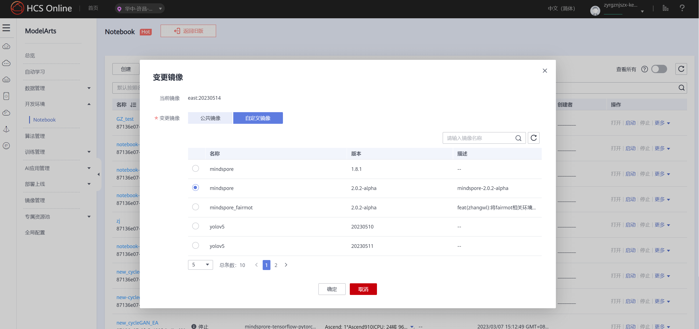
从 EAST for Ascend - Gitee.com 把仓库整下来，最好整到 work/ 文件夹里，这样服务器重启过后数据还能保留。训练这玩意还需要：
调整仓库里的 parser 参数、数据集的位置和预训练模型的位置，使得路径对应一致。
In this project, the file organization is recommended as below:
1 2 3 4 5 6 7 8 9 .
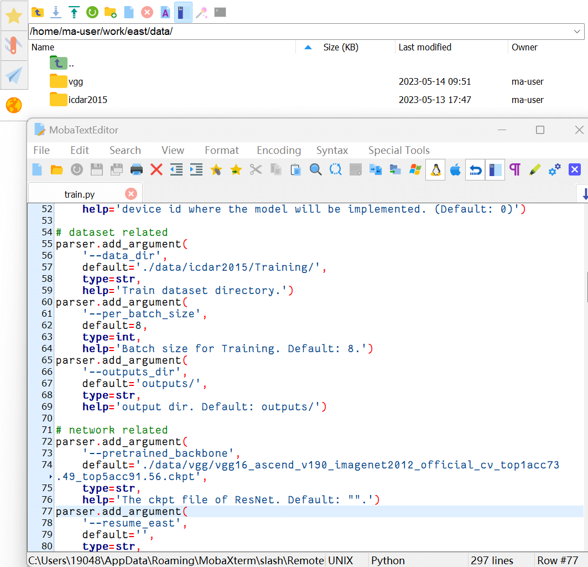
安装环境一条龙！requirements.txt 里面的玩意着实难装，还是手动装好了……
1 2 3 4 5 6 7 8 9 10 11 12 source activate base # 第一次进服务器激活需要 activate base
装好环境后可以保存一下镜像，这样下次重开服务器的时候就会保留之前安装好的环境：
切到仓库目录，开跑 train.py！
1 2 cd /home/ma-user/work/east/
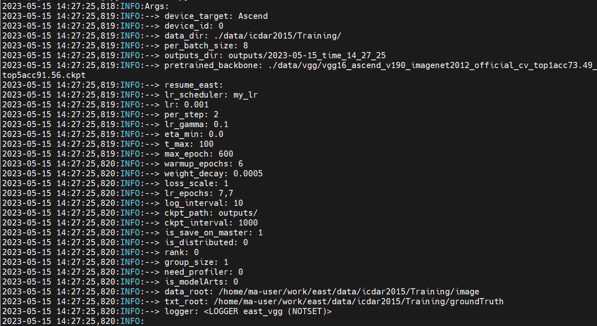
显示完超参数后，就开始 train 了，继续等呗。
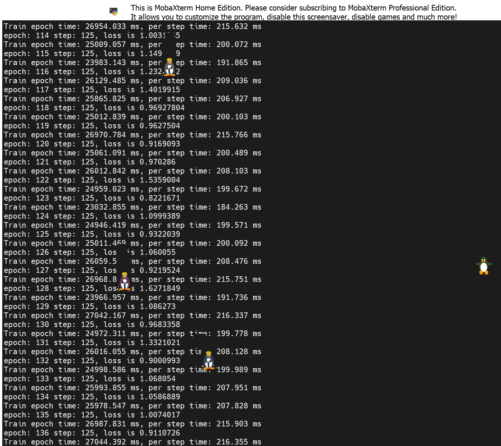
训练时间从 14:27 到 18:41，就能炼出仙丹一枚：checkpoint_east-600_125.ckpt
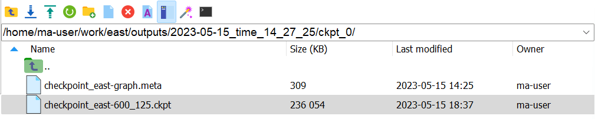
设置一下 eval.py 的参数：
--device_num Ascend 设备的数量，因为我只租了 1 个，所以设为 0--test_img_path 测试集路径，evaluate 时会读取这里面的图片--checkpoint_path 模型的路径，把它设为刚刚炼好的仙丹的路径：outputs/2023-05-15_time_14_27_25/ckpt_0/checkpoint_east-600_125.ckpt
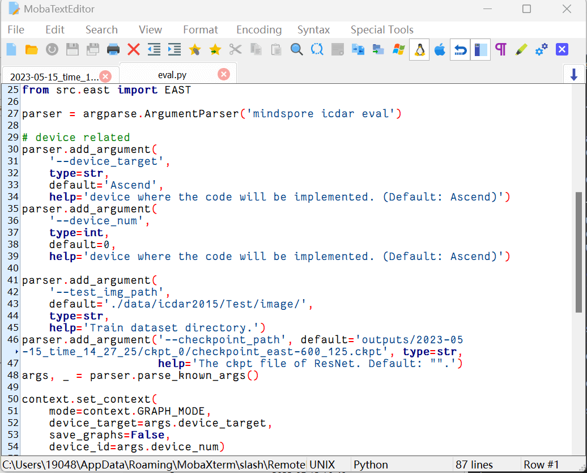
The evaluation scripts are from ICDAR Offline evaluation and have been modified to run successfully with Python 3.7.1.
从上面这个链接里下载 script_test_ch4_t1_e1-1577983151.zip，并放在 evaluate/中：
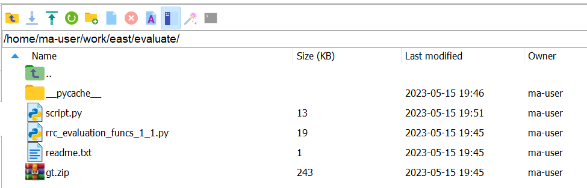
开跑 eval.py！
然后就能在 submit\ 里查看评估结果，和 ground truth 参考一下，能识别一点点东西。
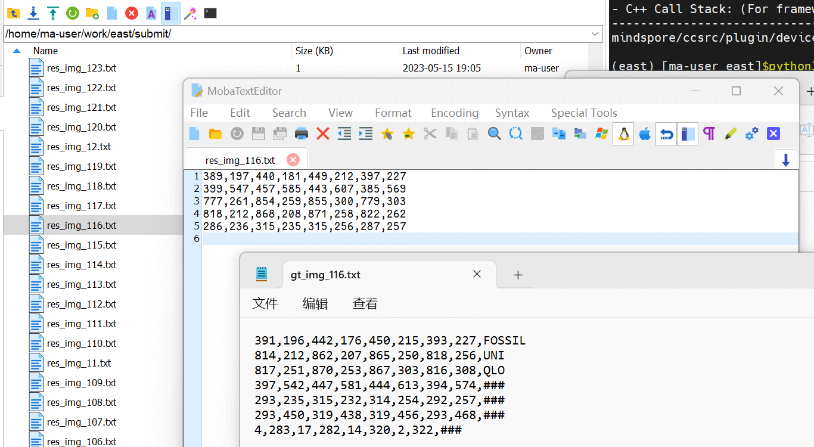
返回出来的效果比它宣传的要差好多啊，呜呜呜……
1 Calculated!{"precision": 0.527431421446384, "recall": 0.6109773712084737, "hmean": 0.566138746375195, "AP": 0}